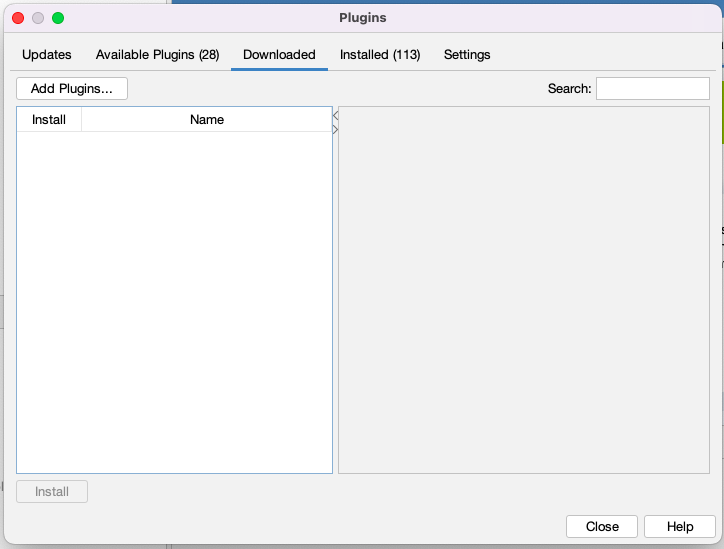

NetBeans Notes - Installing a NetBeans Module
Some of The-Retired-Programmer projects develop NetBeans Plug-ins (NetBeans Modules or NBMs).
This document covers installing these into a Netbeans installation.
Projects uses the GitHub Releases to record the formal releases. In addition the NBM file created as part of the release in stored within the release information.
For a fuller description of The-Retired_Programmer use of GitHub as repository, please look at: https://www.the-retired-programmer.uk/githubdevelopmentnotes.html
Step to install a NBM.
|
Warning
|
Ensure any dependencies on other NBM are satisfied, by loading these NBMs prior to your project NBM, |
Download the latest version of the required NBM to your local machine.
Click on the NetBeans Tools>Plugins menu item to display the Plugin dialog screen.
You can view the modules already installed by clicking on the "Installed" tab and then selecting "Show details"
In this tab it is possible to select a NBM and then its details will be shown in the right hand pane.
It is also possible to "Deactivate" or "Uninstall" a NBM module by using the buttons at the bottom of a tab.
To install a Module you select the "Downloaded"tab.

Then click the "Add Plugins…" button to display a file selection dialogue. navigate to the correct folder (if required) and then select the NBM file that you want to install.
Then follow the process to install the NBM(s). Note that at present The-Retired-Programmer is not signing NBMs, so you will see a warning message to which you should reply "Continue" to complete the Installation.